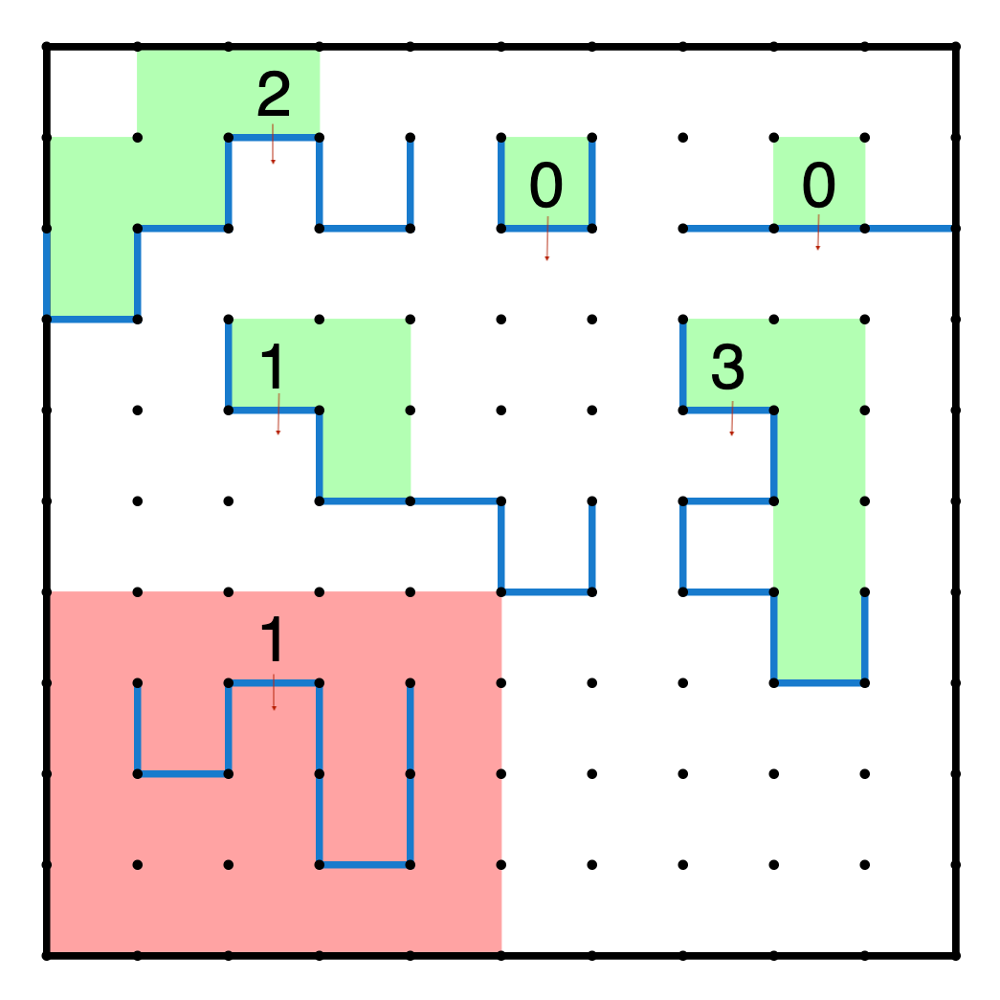

Boulders in Valleys 001
Standard Rules
Jan 1, 2023
Bailey Andrew
January 1, 2023
The solution is a single, non-self-intersecting curve that partitions the grid into two zones (whether by looping or starting and ending at the grid boundary)
The curve travels along grid edges (like Slitherlink) within the grid boundary
There is only one curve that fits the constraints
There is a ball at every number. The value of the number indicates the deepest depth the ball could roll down to. It must roll down to this depth along at least one path, but it does not have to roll down to this depth along every path.
Arrows indicate direction of gravity for the ball.
Grid boundary stops the ball as if it were part of the curve.
A ball can roll “down” any corner, and fall straight “down” if there is no edge below it (“down” defined with respect to gravity).
A ball cannot roll “up” (against gravity) a wall or along two “horizontal” (perpendicular to gravity) segments in a row (the hill would be too shallow!).
Balls do not interfere with each other (i.e. they can pass through each other, overlap each other, etc)

If you want to get better at this puzzle type, check out this post on tips and tricks.